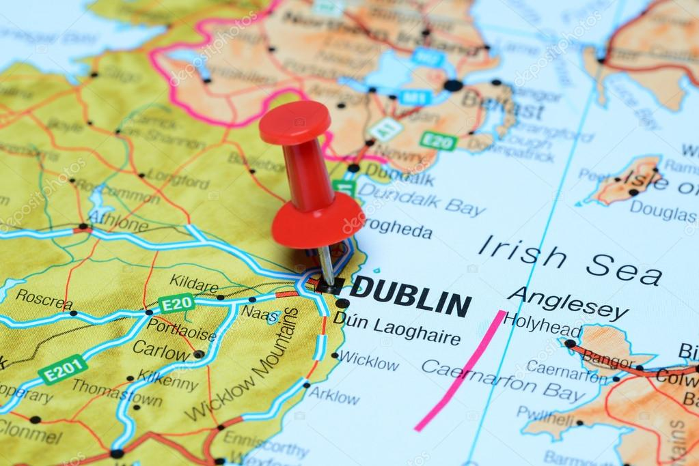

Welcome to my 'Irish Wildlife' website, the place for you to explore the wildlife within Ireland.

My name is Chanell and ever since I was very small, I've been passionate about nature and wildlife,
how each plant and animal lives differently fascinates me.
I made this website as part of a project, and frequently being around nature and sea inspired me to do it on the Wildlife
of Ireland.
My goal is to provide information to those who love nature, or those who are just curious and love to learn new things.
My website offers educational inoformation that cover a variety of topics such as the different land and sea animals,
wildflowers, herbs etc...
If you would like to contact me directly about any questions you may have, my details are provided in the 'Contact' page.